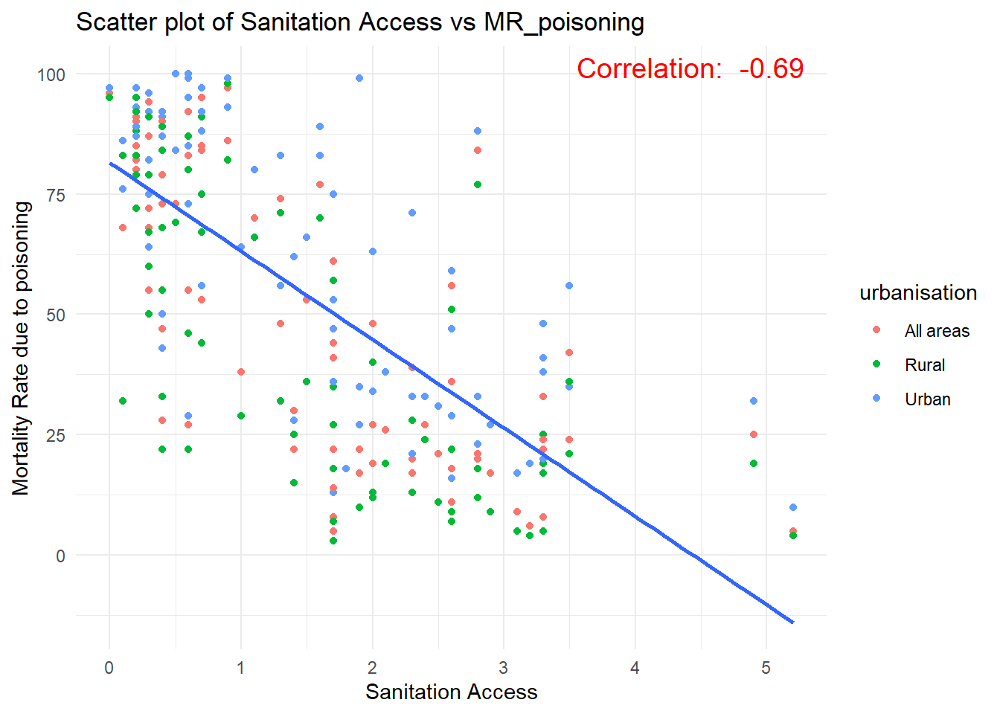

# install.packages("devtools") # Install devtools package if not already installed
# devtools::install_version("knitr", version = "1.42")
library(tidyverse)
library(readxl)
library(rmapshaper)
library(sf)
library(mapview)
library(tmap)
library(lintr)
library(leaflet)
library(RColorBrewer)
library(DT)
library(GGally)
library(dplyr)Indicator_total
Import Indicator Files
#mortality_rate_attributed_to_unsafe_water
mortality_rate_unsafe_water <- read_csv("data/indicator_3.9.2.csv",show_col_types = FALSE)
#Proportion_of_population_using_safely_managed_drinking_water_services
proportion_of_safe_water<- read_csv("data/indicator_6.2.1.csv",show_col_types = FALSE)
#mortality_rate_unintentional_poisoning
mortality_rate_unintentional_poisoning <- read_csv("data/indicator_3.9.3.csv",show_col_types = FALSE)
#proportion-of-population-with-basic-handwashing-facilities-on-premises-by-urban-rural-percent
population_with_basic_handwashing_facilities<- read_csv("data/indicator_6.2.1.csv",show_col_types = FALSE)Extracting Important Data
Mortality rate with unsafe water
mortality_rate_unsafe_water <- select(
mortality_rate_unsafe_water,
code = 'geoAreaCode',
country = 'geoAreaName',
region = 'parentName',
iso = 'ISO3',
MR_unsafe_water = 'latest_value'
)
mortality_rate_unsafe_water <- mortality_rate_unsafe_water %>%
distinct()
mortality_rate_unsafe_water# A tibble: 183 × 5
code country region iso MR_unsafe_water
<dbl> <chr> <chr> <chr> <dbl>
1 583 Micronesia (Federated States of) Oceania (exc. A… FSM 3.6
2 496 Mongolia Eastern Asia MNG 1.3
3 499 Montenegro Southern Europe MNE 0
4 504 Morocco Northern Africa MAR 1.9
5 508 Mozambique Eastern Africa MOZ 27.6
6 104 Myanmar South-Eastern A… MMR 12.6
7 516 Namibia Southern Africa NAM 18.3
8 524 Nepal Southern Asia (… NPL 19.8
9 528 Netherlands Western Europe NLD 0.2
10 554 New Zealand Australia and N… NZL 0.1
# ℹ 173 more rowsProportion of proper sanitation facilities
proportion_of_safe_water <- select(
proportion_of_safe_water,
code = 'geoAreaCode',
country = 'geoAreaName',
region = 'parentName',
iso = 'ISO3',
urbanisation = "location_desc",
sanitation_access = "value_2019",
)
# Remove duplicates
proportion_of_safe_water <- proportion_of_safe_water%>%
distinct()
proportion_of_safe_water# A tibble: 300 × 6
code country region iso urbanisation sanitation_access
<dbl> <chr> <chr> <chr> <chr> <dbl>
1 4 Afghanistan Southern Asia (exclu… AFG All areas 38
2 356 India Southern Asia IND Urban 82
3 360 Indonesia South-Eastern Asia IDN All areas 94
4 4 Afghanistan Southern Asia (exclu… AFG Rural 29
5 694 Sierra Leone Western Africa SLE Rural 18
6 360 Indonesia South-Eastern Asia IDN Rural 91
7 4 Afghanistan Southern Asia (exclu… AFG Urban 64
8 12 Algeria Northern Africa DZA All areas 85
9 12 Algeria Northern Africa DZA Rural 75
10 12 Algeria Northern Africa DZA Urban 88
# ℹ 290 more rowsMortality rate with unintentional poisoning
mortality_rate_unintentional_poisoning <- select(
mortality_rate_unintentional_poisoning,
code = 'geoAreaCode',
country = 'geoAreaName',
region = 'parentName',
iso = 'ISO3',
gender = 'sex_desc',
MR_poisoning = 'value_2019'
)
# drop rows if contains at least one NA value
mortality_rate_unintentional_poisoning <- na.omit(mortality_rate_unintentional_poisoning)
# Remove duplicates
mortality_rate_unintentional_poisoning <- mortality_rate_unintentional_poisoning%>%
distinct()
#check for empty row
any(is.na(mortality_rate_unintentional_poisoning))[1] FALSEmortality_rate_unintentional_poisoning# A tibble: 549 × 6
code country region iso gender MR_poisoning
<dbl> <chr> <chr> <chr> <chr> <dbl>
1 470 Malta Southern Europe MLT Both se… 0.1
2 152 Chile South America CHL Male 0.5
3 4 Afghanistan Southern Asia (excluding India) AFG Both se… 1
4 470 Malta Southern Europe MLT Female 0
5 156 China Eastern Asia CHN Both se… 1.8
6 470 Malta Southern Europe MLT Male 0.2
7 156 China Eastern Asia CHN Female 1.5
8 478 Mauritania Western Africa MRT Both se… 1.5
9 478 Mauritania Western Africa MRT Female 1.3
10 478 Mauritania Western Africa MRT Male 1.7
# ℹ 539 more rowsProportion of hand washing facilities
population_with_basic_handwashing_facilities <- select(
population_with_basic_handwashing_facilities,
code = 'geoAreaCode',
country = 'geoAreaName',
region = 'parentName',
iso = 'ISO3',
urbanisation = 'location_desc',
handwash_access = 'value_2019'
)
# drop rows if contains at least one NA value
population_with_basic_handwashing_facilities <- na.omit(population_with_basic_handwashing_facilities)
# Remove duplicates
population_with_basic_handwashing_facilities <- population_with_basic_handwashing_facilities%>%
distinct()
#check for empty row
any(is.na(mortality_rate_unintentional_poisoning))[1] FALSEpopulation_with_basic_handwashing_facilities# A tibble: 250 × 6
code country region iso urbanisation handwash_access
<dbl> <chr> <chr> <chr> <chr> <dbl>
1 4 Afghanistan Southern Asia (excludi… AFG All areas 38
2 356 India Southern Asia IND Urban 82
3 360 Indonesia South-Eastern Asia IDN All areas 94
4 4 Afghanistan Southern Asia (excludi… AFG Rural 29
5 694 Sierra Leone Western Africa SLE Rural 18
6 360 Indonesia South-Eastern Asia IDN Rural 91
7 4 Afghanistan Southern Asia (excludi… AFG Urban 64
8 12 Algeria Northern Africa DZA All areas 85
9 12 Algeria Northern Africa DZA Rural 75
10 12 Algeria Northern Africa DZA Urban 88
# ℹ 240 more rowsJoining all 4 indicators
countries_tb <- left_join(
mortality_rate_unintentional_poisoning,
population_with_basic_handwashing_facilities,
by = join_by(country, iso)
)Warning in left_join(mortality_rate_unintentional_poisoning, population_with_basic_handwashing_facilities, : Detected an unexpected many-to-many relationship between `x` and `y`.
ℹ Row 3 of `x` matches multiple rows in `y`.
ℹ Row 199 of `y` matches multiple rows in `x`.
ℹ If a many-to-many relationship is expected, set `relationship =
"many-to-many"` to silence this warning.countries_tb <- left_join(
countries_tb,
mortality_rate_unsafe_water,
by = join_by(iso)
)
countries_tb <- left_join(
countries_tb,
proportion_of_safe_water,
by = join_by(iso, urbanisation)
) |>
mutate(
iso = case_match(
iso,
"COD" ~ "ZAR",
"ROU" ~ "ROM",
"TLS" ~ "TMP",
"XKX" ~ "KSV",
.default = iso
)
)
names(countries_tb) [1] "code.x" "country.x" "region.x"
[4] "iso" "gender" "MR_poisoning"
[7] "code.y" "region.y" "urbanisation"
[10] "handwash_access" "code.x.x" "country.y"
[13] "region.x.x" "MR_unsafe_water" "code.y.y"
[16] "country" "region.y.y" "sanitation_access"Clean data
Remove certain columns and rename column for cleaner a look
clean_datatable <- select(countries_tb,
-code.y, -code.x,
-region.y, -region.x,
-code.x.x, code.y.y,
-country.x, -country.y,
-region.x.x, -region.y.y,
-iso)
# Rearrange
clean_datatable <- clean_datatable %>%
select(country,
urbanisation,
gender,
handwash_access,
sanitation_access,
MR_poisoning,
MR_unsafe_water)
datatable(clean_datatable)Correlation between 4 indicators
# filter gender of both sexes to reduce duplicates
countries_tb <- countries_tb |>
filter(gender == "Both sexes") |>
na.omit(countries_tb)
countries_tb# A tibble: 244 × 18
code.x country.x region.x iso gender MR_poisoning code.y region.y
<dbl> <chr> <chr> <chr> <chr> <dbl> <dbl> <chr>
1 4 Afghanistan Southern Asia (… AFG Both … 1 4 Souther…
2 4 Afghanistan Southern Asia (… AFG Both … 1 4 Souther…
3 4 Afghanistan Southern Asia (… AFG Both … 1 4 Souther…
4 478 Mauritania Western Africa MRT Both … 1.5 478 Western…
5 478 Mauritania Western Africa MRT Both … 1.5 478 Western…
6 478 Mauritania Western Africa MRT Both … 1.5 478 Western…
7 484 Mexico Central America MEX Both … 0.4 484 Central…
8 484 Mexico Central America MEX Both … 0.4 484 Central…
9 484 Mexico Central America MEX Both … 0.4 484 Central…
10 496 Mongolia Eastern Asia MNG Both … 2.8 496 Eastern…
# ℹ 234 more rows
# ℹ 10 more variables: urbanisation <chr>, handwash_access <dbl>,
# code.x.x <dbl>, country.y <chr>, region.x.x <chr>, MR_unsafe_water <dbl>,
# code.y.y <dbl>, country <chr>, region.y.y <chr>, sanitation_access <dbl>countries_tb_subset <- select(countries_tb, MR_poisoning, MR_unsafe_water, handwash_access, sanitation_access,urbanisation,country.x)
# Display the subsetted data
print(countries_tb_subset)# A tibble: 244 × 6
MR_poisoning MR_unsafe_water handwash_access sanitation_access urbanisation
<dbl> <dbl> <dbl> <dbl> <chr>
1 1 13.9 38 38 All areas
2 1 13.9 29 29 Rural
3 1 13.9 64 64 Urban
4 1.5 38.6 53 53 All areas
5 1.5 38.6 36 36 Rural
6 1.5 38.6 66 66 Urban
7 0.4 1.1 90 90 All areas
8 0.4 1.1 84 84 Rural
9 0.4 1.1 91 91 Urban
10 2.8 1.3 84 84 All areas
# ℹ 234 more rows
# ℹ 1 more variable: country.x <chr>GGplot stuff, can delete
# Generate Correlation between all MR_unsafe_water,MR_poisoning, handwash_access and sanitation_access
#Correlation between MR_unsafe_water vs handwash_access
cor_unsafe_water_handwash <- cor(countries_tb$MR_unsafe_water, countries_tb$handwash_access)
#Correlation between MR_unsafe_water vs sanitation_access
cor_unsafe_water_sanitation <- cor(countries_tb$MR_unsafe_water, countries_tb$sanitation_access)
#Correlation between MR_unsafe_water vs MR_poisoning
cor_unsafe_water_poisoning <- cor(countries_tb$MR_unsafe_water, countries_tb$MR_poisoning)
#Correlation between handwash_access vs sanitation_access
cor_handwash_sanitation <- cor(countries_tb$handwash_access, countries_tb$sanitation_access)
#Correlation between MR_poisoning vs sanitation_access
cor_sanitation_poisoning <- cor(countries_tb$sanitation_access, countries_tb$MR_poisoning)
#Correlation between handwash_access vs MR_poisoning
cor_handwash_poisoning <- cor(countries_tb$handwash_access, countries_tb$MR_poisoning)safe_water vs MR_poisoning (can delete)
library(plotly)Warning: package 'plotly' was built under R version 4.3.1
Attaching package: 'plotly'The following object is masked from 'package:ggplot2':
last_plotThe following object is masked from 'package:stats':
filterThe following object is masked from 'package:graphics':
layout# Scatter plot for MR_unsafe_water vs sanitation_access
plot1 <- ggplot(countries_tb, aes(x = MR_unsafe_water, y = sanitation_access)) +
geom_point(aes(color = urbanisation, text = paste("Country:", country))) +
geom_smooth(method = "lm", se = FALSE) +
labs(x = "Mortality Rate due to unsafe water", y = "Sanitation Access",
title = "Scatter plot of MR_unsafe_water vs Sanitation Access") +
annotate("text", x = Inf, y = Inf, label = paste("Correlation: ", round(cor_unsafe_water_sanitation, 2)),
hjust = 1.1, vjust = 1.5, size = 5, color = "red") + # cannot render in ggplot
theme_minimal()Warning in geom_point(aes(color = urbanisation, text = paste("Country:", :
Ignoring unknown aesthetics: text# Scatter plot for MR_unsafe_water vs MR_poisoning
plot2 <- ggplot(countries_tb, aes(x = MR_unsafe_water, y = MR_poisoning)) +
geom_point(aes(color = urbanisation, text = paste("Country:", country))) +
geom_smooth(method = "lm", se = FALSE) +
labs(x = "Mortality Rate due to unsafe water", y = "Mortality Rate due to poisoning",
title = "Scatter plot of MR_unsafe_water vs MR_poisoning") +
annotate("text", x = Inf, y = Inf, label = paste("Correlation: ", round(cor_unsafe_water_poisoning, 2)),
hjust = 1.1, vjust = 1.5, size = 5, color = "red") + # cannot render in ggplot
theme_minimal()Warning in geom_point(aes(color = urbanisation, text = paste("Country:", :
Ignoring unknown aesthetics: text# Scatter plot for handwash_access vs sanitation_access
plot3 <- ggplot(countries_tb, aes(x = handwash_access, y = sanitation_access)) +
geom_point(aes(color = urbanisation, text = paste("Country:", country))) +
geom_smooth(method = "lm", se = FALSE) +
labs(x = "Handwashing Access", y = "Sanitation Access",
title = "Scatter plot of Handwashing Access vs Sanitation Access") +
annotate("text", x = Inf, y = Inf, label = paste("Correlation: ", round(cor_handwash_sanitation, 2)),
hjust = 1.1, vjust = 1.5, size = 5, color = "red") + # cannot render in ggplot
theme_minimal()Warning in geom_point(aes(color = urbanisation, text = paste("Country:", :
Ignoring unknown aesthetics: text# Scatter plot for handwash_access vs MR_poisoning
plot4 <- ggplot(countries_tb, aes(x = handwash_access, y = MR_poisoning)) +
geom_point(aes(color = urbanisation, text = paste("Country:", country))) +
geom_smooth(method = "lm", se = FALSE) +
labs(x = "Handwashing Access", y = "Mortality Rate due to poisoning",
title = "Scatter plot of Handwashing Access vs MR_poisoning") +
annotate("text", x = Inf, y = Inf, label = paste("Correlation: ", round(cor_handwash_poisoning, 2)),
hjust = 1.1, vjust = 1.5, size = 5, color = "red") + # cannot render in ggplot
theme_minimal()Warning in geom_point(aes(color = urbanisation, text = paste("Country:", :
Ignoring unknown aesthetics: text# Scatter plot for sanitation_access vs MR_poisoning
plot5 <- ggplot(countries_tb, aes(x = MR_poisoning, y = sanitation_access)) +
geom_point(aes(color = urbanisation, text = paste("Country:", country))) +
geom_smooth(method = "lm", se = FALSE) +
labs(x = "Sanitation Access", y = "Mortality Rate due to poisoning",
title = "Scatter plot of Sanitation Access vs MR_poisoning") +
annotate("text", x = Inf, y = Inf, label = paste("Correlation: ", round(cor_sanitation_poisoning, 2)),
hjust = 1.1, vjust = 1.5, size = 5, color = "red") + # cannot render in ggplot
theme_minimal()Warning in geom_point(aes(color = urbanisation, text = paste("Country:", :
Ignoring unknown aesthetics: textplot1`geom_smooth()` using formula = 'y ~ x'plot2`geom_smooth()` using formula = 'y ~ x'plot3`geom_smooth()` using formula = 'y ~ x'plot4`geom_smooth()` using formula = 'y ~ x'plot5`geom_smooth()` using formula = 'y ~ x'
Experiment with scatterplot matrix
library(GGally)
library(ggplot2)
#set axis names
countries_tb_subset_corr4 <- select(countries_tb_subset, MR_unsafe_water, MR_poisoning, handwash_access, sanitation_access, urbanisation,country.x)
colnames(countries_tb_subset_corr4) <- c("Unsafe Water Mortality Rate",
"Poisoning Mortality",
"Handwashing Access (%)",
"Sanitation Access (%)",
"Urbanisation",
"Countries"
)
countries_tb_subset_corr4# A tibble: 244 × 6
`Unsafe Water Mortality Rate` `Poisoning Mortality` `Handwashing Access (%)`
<dbl> <dbl> <dbl>
1 13.9 1 38
2 13.9 1 29
3 13.9 1 64
4 38.6 1.5 53
5 38.6 1.5 36
6 38.6 1.5 66
7 1.1 0.4 90
8 1.1 0.4 84
9 1.1 0.4 91
10 1.3 2.8 84
# ℹ 234 more rows
# ℹ 3 more variables: `Sanitation Access (%)` <dbl>, Urbanisation <chr>,
# Countries <chr>#change to factor for colour
countries_tb_subset_corr4$Urbanisation <- as.factor(countries_tb_subset_corr4$Urbanisation)
plot <- ggpairs(data = countries_tb_subset_corr4,
columns = 1:4,
upper = list(continuous = "cor"),
lower = list(continuous = "smooth", se=FALSE),
diag = list(continuous = "bar", bin=30),
mapping = aes(color = Urbanisation),
tooltips = c("Countries")) +
theme_minimal()Warning in warn_if_args_exist(list(...)): Extra arguments: "tooltips" are being
ignored. If these are meant to be aesthetics, submit them using the 'mapping'
variable within ggpairs with ggplot2::aes or ggplot2::aes_string.Warning in check_and_set_ggpairs_defaults("diag", diag, continuous =
"densityDiag", : Changing diag$continuous from 'bar' to 'barDiag'plot`stat_bin()` using `bins = 30`. Pick better value with `binwidth`.
`stat_bin()` using `bins = 30`. Pick better value with `binwidth`.
`stat_bin()` using `bins = 30`. Pick better value with `binwidth`.
`stat_bin()` using `bins = 30`. Pick better value with `binwidth`.”
# Convert ggplot to plotly
plot_interactive <- ggplotly(plot)`stat_bin()` using `bins = 30`. Pick better value with `binwidth`.
`stat_bin()` using `bins = 30`. Pick better value with `binwidth`.Warning: Can only have one: highlight`stat_bin()` using `bins = 30`. Pick better value with `binwidth`.Warning: Can only have one: highlight`stat_bin()` using `bins = 30`. Pick better value with `binwidth`.Warning: Can only have one: highlightlayout(plot_interactive,
font = list(size = 8)
)# Render the plotly scatterplot matrix
plot_interactiveDifferent Scatter plot matrix
library(psych)Warning: package 'psych' was built under R version 4.3.1
Attaching package: 'psych'The following objects are masked from 'package:ggplot2':
%+%, alphacountries_tb_subset_corr4 <- select(countries_tb_subset, MR_unsafe_water, MR_poisoning, handwash_access, sanitation_access, urbanisation)
# Rename the columns
colnames(countries_tb_subset_corr4) <- c("Unsafe Water Mortality Rate",
"Poisoning Mortality",
"Handwashing Access (%)",
"Sanitation Access (%)",
"Urbanisation")
# Make urbanisation as a factor for colourisation
countries_tb_subset_corr4$Urbanisation <- as.factor(countries_tb_subset_corr4$Urbanisation)
# Map urbanisation to colors
color_mapping <- c("All areas" = "red", "Urban" = "blue", "Rural" = "green") # Adjust to your actual factor levels and desired colors
colors <- color_mapping[countries_tb_subset_corr4$Urbanisation]
# Create scatterplot matrix without colors
plot <- pairs.panels(countries_tb_subset_corr4[, 1:4],
hist.col = "#00AFBB",
bg = "transparent")